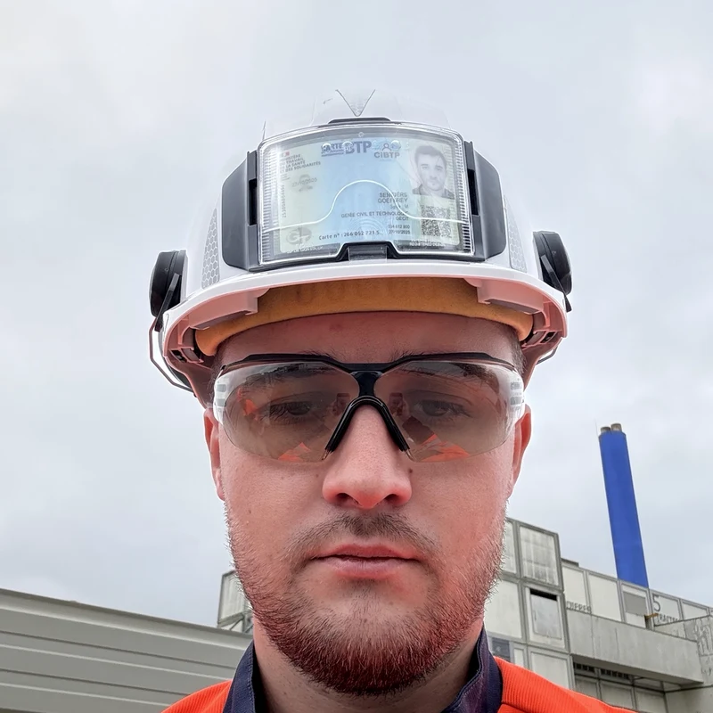
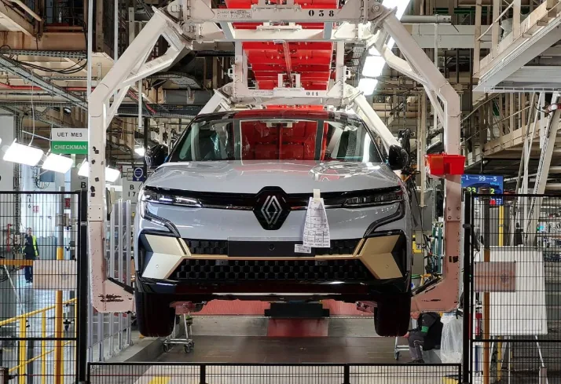
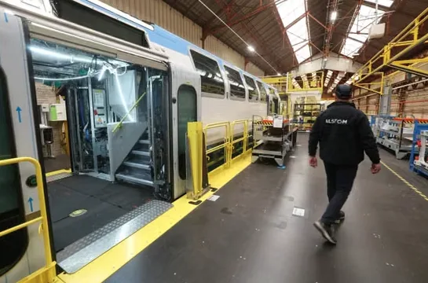
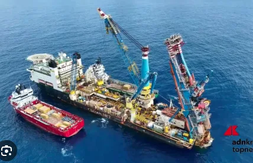
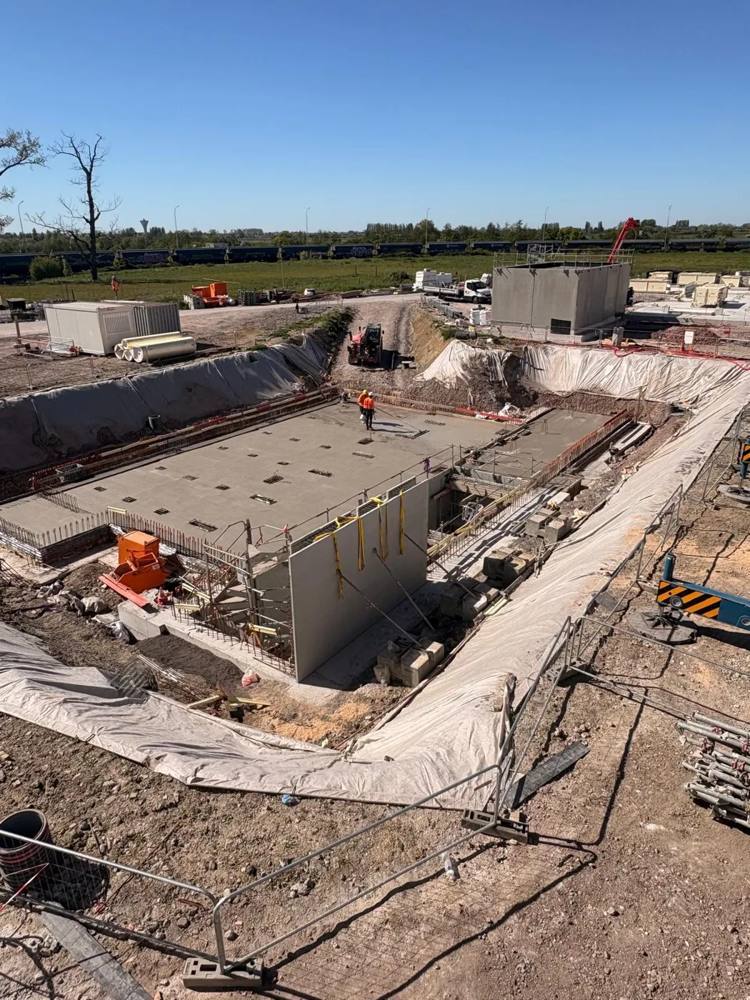
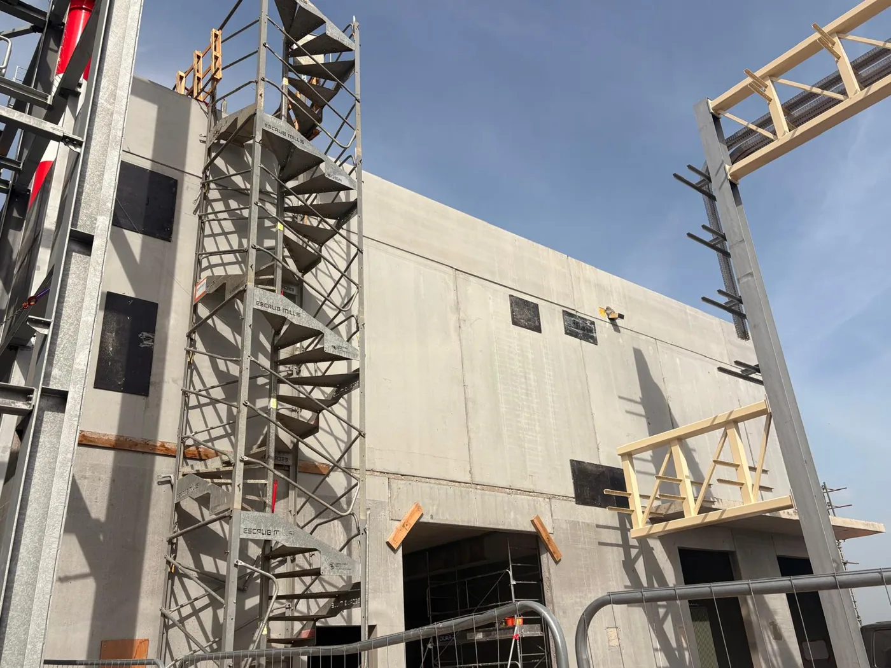
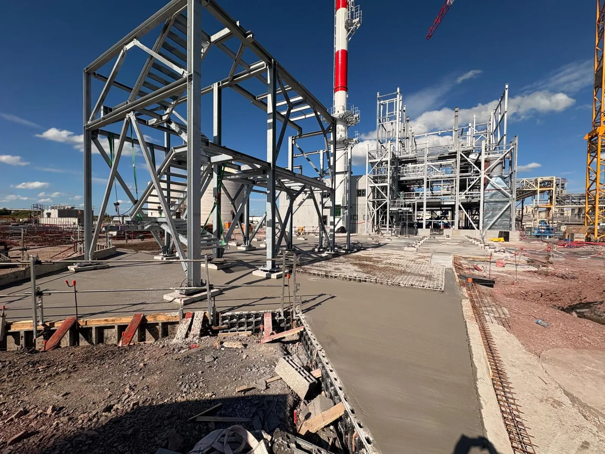
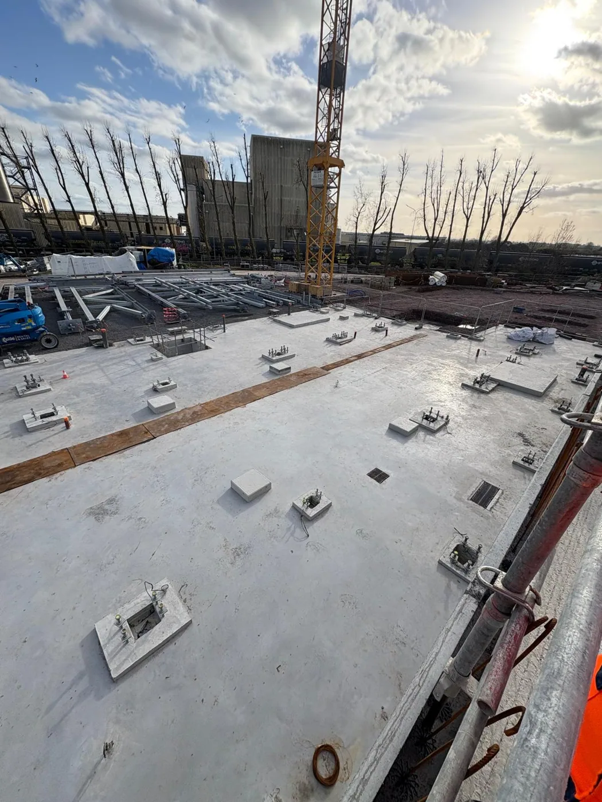
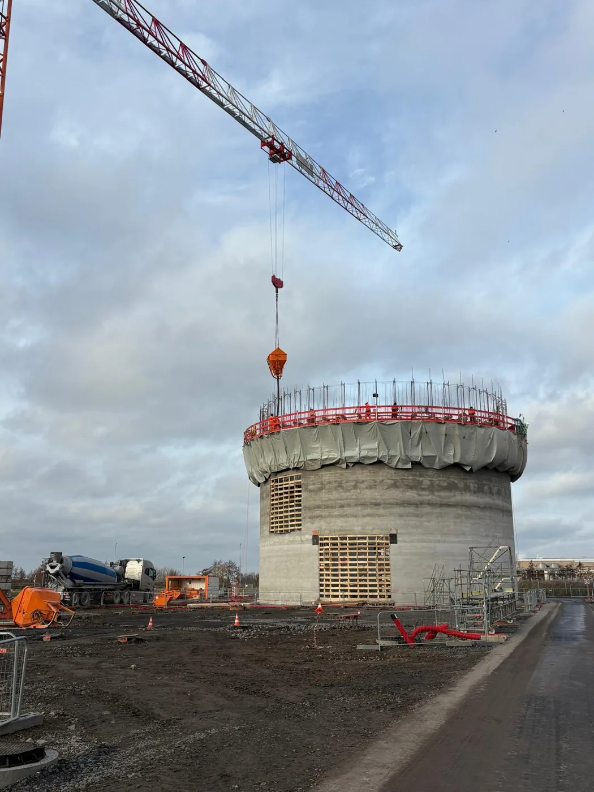
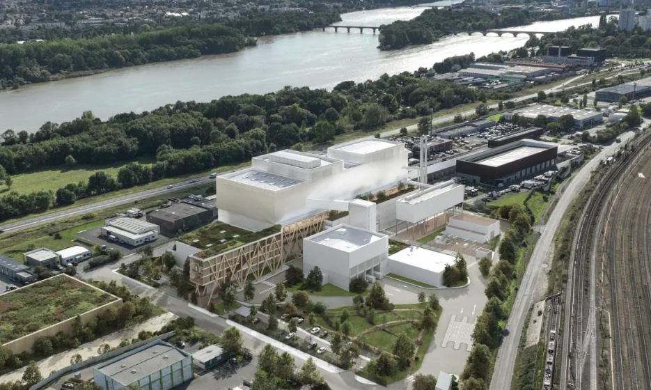

GÉNIE CIVIL · UVE NANTES
GÉNIE CIVIL · UVE NANTES
● Profil professionnelCarte de visite digitale
Geoffrey Sengiers
Superviseur Génie Civil
UVE Nantes · Génie civil & industrie
En mission chez PAPREC · via Domea
ICAM – Institut Catholique d’Arts et Métiers

Scannez pour ouvrir cette carte
Un clic suffit pour enregistrer mes coordonnées dans votre répertoire.
Mon parcours en images
Cinq expériences industrielles en un coup d’œil. Ouvrez Roquette pour découvrir les photos du chantier.

Installation de nouveaux moyens industriels destinés à la production de véhicules électriques.

Retrofit d’une rame d’essai M7 destinée à la Belgique, ainsi que désindustrialisation d’une chaîne de production en chaudronnerie.

Mission de courte durée en tant que Vessel Field Engineer à bord du FDS 2.

Roquette · Chaufferie biomasse · 60 MWExpérience en conduite de travaux génie civil sur une chaufferie biomasse de 60 MW.
Voir les photos ↗
Expérience en conduite de travaux génie civil sur une chaufferie biomasse de 60 MW.





Supervision génie civil sur le projet de l’UVE de Nantes · Mission en cours chez PAPREC via Domea.
Mon CV
Retrouvez mon parcours, mes expériences et mes compétences.
Consulter / télécharger mon CV ↗Le CV sera disponible dès que le fichier PDF aura été ajouté au dépôt GitHub sous le nom cv-geoffrey-sengiers.pdf.